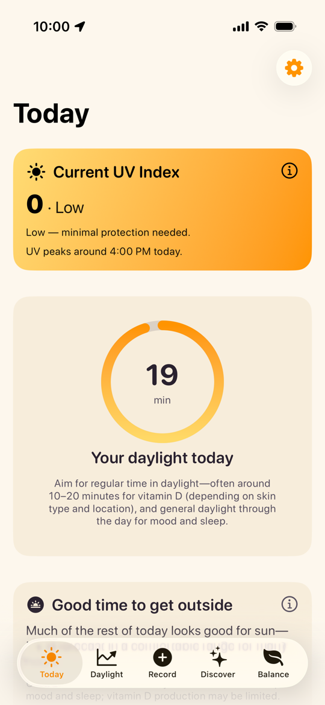
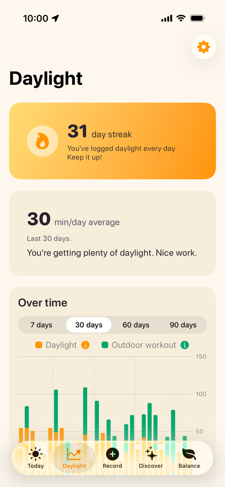
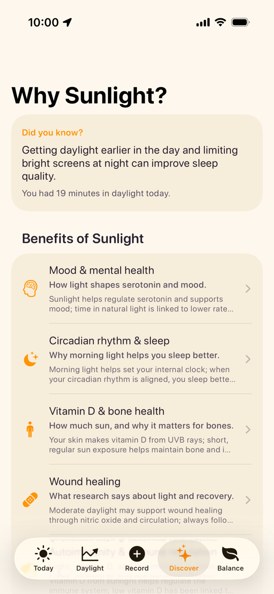

Check UV and sun timing
See current UV plus sunrise and sunset so you can plan smart outdoor time.
Sunny Day for iOS
Track your daily light exposure with Apple Health Time in Daylight data, check live UV and sun timing, and build better routines over time.

See current UV plus sunrise and sunset so you can plan smart outdoor time.
Use Apple Health data to understand your daily and weekly light exposure trends.
Use simple tracking and reminders to make sunlight habits easier to sustain.
Visualize 7 / 30 / 60 / 90 day exposure history and review your day-by-day pattern.
Learn about mood, sleep, and vitamin D in simple language while you track progress.
Today

Daylight
Record

Discover
Sunny Day stores your app data on-device and does not send your Health data to a backend.
Built with Apple Health and WeatherKit for daylight tracking and UV-aware guidance.
Need help with Sunny Day? Contact us at support@sunny-day.app.
Sunny Day requires iOS 26 or later on iPhone. For Apple Health Time in Daylight data, you need a compatible Apple Watch (SE 2, Series 6, Ultra, and newer).
Yes. You can still use UV and sun timing features and manually record daylight sessions. Apple Watch is needed only for automatic Time in Daylight tracking from Health.
For exposure tracking features, yes. Sunny Day reads and writes the Time in Daylight quantity type for history views and manual recordings.
No. Sunny Day is a general wellness app and does not provide medical advice, diagnosis, or treatment.